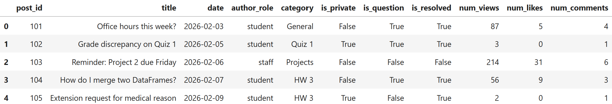
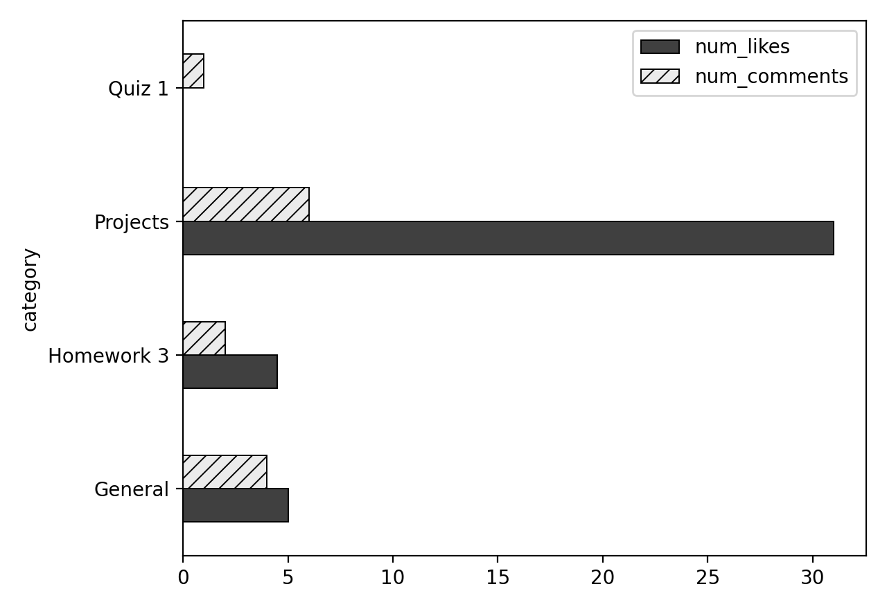
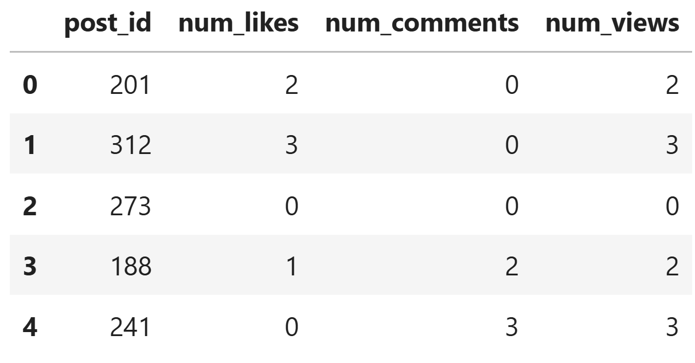
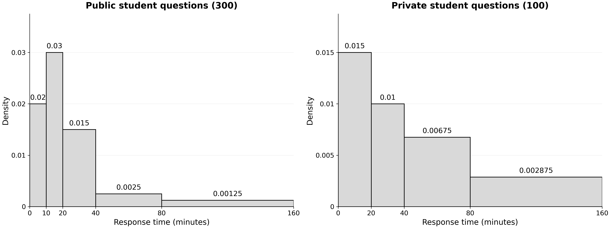

← return to practice.dsc10.com
Instructor(s): Peter Chi, Janine Tiefenbruck
This exam was administered in-person. The exam was closed-notes, except students were allowed to bring their own double-sided cheat sheet. No calculators were allowed. Students had 50 minutes to take this exam.
⚠️ PDF version available here .
Campuswire is an online discussion forum used by many college courses, including DSC 10. Students and instructional staff use it to ask questions, share announcements, and discuss course material.
The DataFrame posts has one row for every post made on a
course’s Campuswire forum. The columns are:
"post_id" (int): A unique ID number for
the post."title" (str): The title of the post."date" (str): The date the post was made,
formatted as "YYYY-MM-DD", for example
"2026-02-03"."author_role" (str): The role of the
author, either "student" or "staff"."category" (str): The category the post
was filed under, such as "General", "Quiz 1",
"Projects", or "Homework 3"."is_private" (bool): True if
the post is visible only to the author and course staff, and
False if it is visible to the whole class."is_question" (bool): True if
the post is a question, and False if it is a note (such as
an announcement or reminder)."is_resolved" (bool): True if
the post has been marked as resolved, and False
otherwise."num_views" (int): The number of times the
post has been viewed."num_likes" (int): The number of likes the
post has received."num_comments" (int): The number of
comments on the post.The first few rows of posts are shown below, though
posts has many more rows than pictured.

Throughout this exam, we will refer to posts repeatedly.
Assume that we have already run import babypandas as bpd
and import numpy as np.
Write one line of code to create a horizontal bar
chart showing both the average "num_likes" and the average
"num_comments" for each "category". On a
DataFrame of just the 5 rows shown in the data description, it would
look like the image below.

Answer:
posts.get(["category", "num_likes", "num_comments"]).groupby("category").mean().plot(kind="barh")
The average score on this problem was 75%.
After a particularly difficult DSC 10 quiz, students flood Campuswire with questions. The course staff scramble to respond, but each new question has only a 40% chance of receiving a response within ten minutes, independently of other questions.
For all parts, give your answer as a mathematical expression. You do not need to simplify.
What is the probability that the first two questions do not receive responses within ten minutes, but the third question does?
Answer: 0.6^2 \cdot 0.4
The average score on this problem was 73%.
What is the probability that exactly two of the first three questions receive a response within ten minutes?
Answer: 3 \cdot 0.4^2 \cdot 0.6
The average score on this problem was 33%.
What is the probability that none of the first three questions receive responses within ten minutes?
Answer: 0.6^3
The average score on this problem was 75%.
Given that exactly one of the first three questions receives a response within ten minutes, what is the probability that it is the third question?
Answer: \frac{1}{3}
The average score on this problem was 52%.
Let a, b, c, and d represent the correct answers to parts (a), (b), (c), and (d), respectively.
Given that at least one of the first three questions receives a response within ten minutes, what is the probability that the third question is the only one to receive a response within ten minutes?
\dfrac{d}{a+b}
\dfrac{a}{1-c}
\dfrac{d}{1-c}
\dfrac{a}{a+b}
Answer: \dfrac{a}{1-c}
The average score on this problem was 49%.
Define a Series containing the first five values in the
"num_comments" column:
five = posts.take(np.arange(5)).get("num_comments")Determine the value of each of the following expressions.
10 + five.sum()
Answer: 25
five contains the first five values of the
"num_comments" column, which are 4, 1, 6, 3, and 1.
five.sum() reduces the Series to a single number: 4 + 1 + 6
+ 3 + 1 = 15. Then, 10 is added once to this total, giving 10 + 15 =
25.
The average score on this problem was 90%.
(10 + five).sum()
Answer: 65
Here, the parentheses change the order of operations.
10 + five adds 10 to every element of the Series, giving a
Series with values 14, 11, 16, 13, and 11. Summing these gives 65.
Equivalently, adding 10 to each of the 5 values increases the total by 10 * 5 = 50, so the result is 15 + 50 = 65. The only difference between this part and the previous one is when the 10 is added: once after summing, or to each element before summing.
The average score on this problem was 92%.
((five + (five >= 5).sum()) >= 5).sum()
Answer: 2
It’s easiest to evaluate this expression from the inside out.
five >= 5 is an element-wise comparison, giving a
Boolean Series with values False, False,
True, False, False..sum() on a Boolean Series counts the number of
True values, since True is treated as 1 and
False as 0. So (five >= 5).sum() evaluates
to 1.five + 1 adds 1 to each element, giving a Series with
values 5, 2, 7, 4, 2.>= 5 gives a Boolean
Series with values True, False,
True, False, False..sum() counts the True values,
giving 2.
The average score on this problem was 25%.
Suppose we want the function convert_to_month to take a
string in the format of "YYYY-MM-DD" and return the month
as an integer. Fill in the blanks in the code below.
def convert_to_month(x):
return __(a)__(x.__(b)__[1])Answer:
(a): int(b): split("-")
The average score on this problem was 86%.
Next, we want post_months to evaluate to a Series with
the month (as an integer) that each post was made on Campuswire, in the
same order as the rows appear in the DataFrame. Fill in the blanks in
the code below.
post_months = posts.__(c)__.__(d)__Answer:
(c): get("date")(d): apply(convert_to_month)
The average score on this problem was 83%.
Which of the following evaluates to the title of the question with the third-highest number of views? Select all that apply.
posts.sort_values("num_views", ascending=False).get("title").iloc[2]
posts[posts.get("is_question") == True].get(["title", "num_views"]).set_index("title").sort_values("num_views", ascending=False).index[2]
posts[posts.get("is_question")].sort_values("num_views", ascending=False).get("title").loc[2]
posts[posts.get("is_question") == True].sort_values("num_views", ascending=False).get("title").iloc[2]
posts[posts.get("is_question")].sort_values("num_views", ascending=False).get("title").iloc[-3]
None of the above.
Answer: Option 2, 4
Option 1:
posts.sort_values("num_views", ascending=False).get("title").iloc[2]
This never filters to questions. It returns the title of the post with
the third-highest views among all posts, which may not be a
question.
Option 2:
posts[posts.get("is_question") == True].get(["title", "num_views"]).set_index("title").sort_values("num_views", ascending=False).index[2]
This keeps only the questions and the two needed columns, makes
"title" the index, and sorts by views in descending order.
.index[2] takes the third element of the index, which is
the title of the third-most-viewed question. The titles are in the
index, not a column, so .index is the right way to get to
them.
Option 3:
posts[posts.get("is_question")].sort_values("num_views", ascending=False).get("title").loc[2]
The filter posts[posts.get("is_question")] is fine.
"is_question" is already a Boolean column, so it works the
same as == True. The problem is .loc[2].
.loc looks up the row with index label 2, and
sorting rearranges rows without changing their labels. So this returns
the title of whichever post was originally in row 2, not the post in
third place after sorting. If row 2 isn’t a question, it was filtered
out, and this raises a KeyError.
Option 4:
posts[posts.get("is_question") == True].sort_values("num_views", ascending=False).get("title").iloc[2]
This keeps only questions, sorts them from most to fewest views, and
gets the titles. .iloc[2] takes the item at
position 2, which is the third item. That is the
third-most-viewed question.
Option 5:
posts[posts.get("is_question")].sort_values("num_views", ascending=False).get("title").iloc[-3]
The filtering and sorting are correct. However, .iloc[-3]
counts from the end, so with a descending sort it gives the question
with the third-lowest number of views.
The average score on this problem was 88%.
Which of the following evaluates to the number of views of the post
with "post_id" 104? Select all that
apply.
posts.get("num_views").loc[3]
posts.get("num_views").iloc[3]
posts.set_index("post_id").get("num_views").loc[104]
posts.set_index("post_id").get("num_views").iloc[104]
posts.sort_values("num_views").get("num_views").iloc[3]
posts.sort_values("num_views").get("num_views").loc[3]
posts[posts.get("post_id") == 104].get("num_views").iloc[0]
None of the above.
Answer: Option 1, 2, 3, 6, 7
Option 1: posts.get("num_views").loc[3] Post
104 is in the row with index label 3, so
.loc[3] returns its number of views.
Option 2: posts.get("num_views").iloc[3]
posts has the default index, so label 3 and position 3
are the same row. .iloc[3] returns the same value as
.loc[3].
Option 3:
posts.set_index("post_id").get("num_views").loc[104]
After "post_id" becomes the index, the post IDs are the
labels. .loc[104] looks up the label 104
directly. This is the most robust option, because it doesn’t depend on
where the post sits in the table.
Option 4:
posts.set_index("post_id").get("num_views").iloc[104]
.iloc uses positions, not labels. .iloc[104]
asks for the 105th row, which either doesn’t exist
(IndexError) or is a different post. Use .loc
to look up by post ID.
Option 5:
posts.sort_values("num_views").get("num_views").iloc[3]
After sorting, position 3 holds the post with the fourth-smallest
number of views. That is not necessarily post 104.
Option 6:
posts.sort_values("num_views").get("num_views").loc[3]
Sorting reorders the rows, but each row keeps its original index
label. .loc[3] finds the row labeled 3, which is still post
104, wherever it ended up after sorting.
Option 7:
posts[posts.get("post_id") == 104].get("num_views").iloc[0]
The query keeps only the row where "post_id" is
104, which gives a one-element Series.
.iloc[0] pulls out that one value. Note that
.loc[0] would not work here: the remaining row
still has label 3, so there is no label 0.
The average score on this problem was 70%.
Suppose we divide student-authored posts into four categories as follows:
Fill in the blanks in the code below to create a DataFrame called
max_likes with four rows and a single column containing the
largest number of likes on a single post in each of
these four categories. The rows can be in any order (not necessarily
matching the order given above).
student_posts = posts[__(a)__]
max_likes = student_posts.get(__(b)__).groupby(__(c)__).__(d)__Answer:
(a):
posts.get("author_role") == "student"(b):
["is_private", "is_resolved", "num_likes"](c): ["is_private", "is_resolved"](d): max()First, filter posts to include only student-authored
posts by checking whether "author_role" equals
"student".
Next, select the columns "is_private",
"is_resolved", and "num_likes", then group by
"is_private" and "is_resolved". Finally, apply
max() to find the largest number of likes in each category.
Since both grouping columns are Boolean, the result has up to four rows,
one for each combination of privacy and resolution status.
The average score on this problem was 67%.
Vanessa authored five of the posts included in posts. We
define a DataFrame called vanessa containing only Vanessa’s
posts, and keeping only certain columns. This DataFrame is shown in full
below.

What does the following expression evaluate to?
vanessa.merge(vanessa, left_on="num_likes", right_on="num_comments").shape[0]Answer: 8
Two left rows with 0 likes each match three right rows with 0 comments, giving 6 matches. The rows with 2 and 3 likes contribute one match each.
The average score on this problem was 57%.
Suppose the array assignments contains the names of all
assignments in a course. For example, assignments[0] might
be "Homework 1".
Suppose also that the array due_dates contains the
deadlines for all assignments in the course, in the same order as in
assignments. In particular, both arrays have the same
length. The entries of due_dates are strings formatted like
"YYYY-MM-DD". For example, due_dates[0] might
be "2026-01-12".
Our goal in this problem is to create a string called
reminders that contains sentences describing when each
assignment is due, with one space after each sentence. For example, in a
class with only three assignments, the output may look like this:
"Homework 1 is due on 2026-01-12. Homework 2 is due on 2026-01-17. Midterm Project is due on 2026-01-25. "
Complete the for-loop below so that reminders is a
string formatted like the above example, using all the assignments and
deadlines in assignments and due_dates.
reminders = __(a)__
for i in __(b)__:
reminders = __(c)__Answer:
(a): "" Our resulting string, reminders,
must be initialized as an empty string because when appending sentences
to the result, we should not be starting with any extra text.(b): np.arange(len(assignments)) or
np.arange(len(due_dates)) The number of iterations in the
for loop is determined by the length of either the assignments or
due_dates arrays, which will have the same length (per the instructions
above). In order to loop through each assignment from the beginning, we
create an array using the length of the array, which produces elements
starting at index 0 and continues until length - 1, as np.arange(n)
stops right before n, giving us exactly len number of elements.(c):
reminders + assignments[i] + " is due on " + due_dates[i] + ". "
The first part of this statement (reminders) helps us reassign the
existing reminders string to the reminders variable, allowing us to
append whatever comes after to it. The second part (assignments[i])
allows us to return the corresponding assignment name to the iteration
we’re on, based on the assignments array. The third part (” is due on “)
must have a space before is and after on in order to be correctly spaced
when adjoined to the second and fourth parts. The fourth part
(due_dates[i]) allows us to return the corresponding due date to the
iteration we’re on, based on the due_dates array. Finally, the last part
(”. “) finishes off the sentence with a period and a space that is there
to make sure the next sentences that get appended aren’t starting
immediately after the period.
The average score on this problem was 54%.
The course tutors are constantly competing to give the best, most
thoughtful answers on Campuswire. To determine who is the nicest tutor,
the course staff run a weekly Kindness Check: they
select 4 posts at random, without replacement, from
posts and read every tutor reply on them. Since only
questions receive replies, Jeffrey is hoping that the Kindness Check
lands on more questions than notes. That way, he has more chances to
show everyone just how nice he can be.
Fill in the blanks below so that prob_more_questions is
an estimate of the probability that a Kindness Check contains
more questions than notes.
repetitions = 10000
count = 0
for i in np.arange(repetitions):
check = np.random.choice(__(a)__)
if __(b)__:
count = count + 1
prob_more_questions = count / repetitionsWhich of the following correctly fills in blank (a)? Select one.
posts, 4, replace=True
posts, 4, replace=False
posts.get("is_question"), 4, replace=True
posts.get("is_question"), 4, replace=False
np.array([True, False]), 4, replace=True
np.array([True, False]), 4, replace=False
Answer:
posts.get("is_question"), 4, replace=False
The average score on this problem was 72%.
Which of the following could go in blank (b)? Select all that apply.
np.count_nonzero(check) >= 3
np.count_nonzero(check) >= 2
np.count_nonzero(check) > 0.5
check.sum() > (4 - (check).sum())
check.mean() > 0.5
None of the above.
Answer:
np.count_nonzero(check) >= 3check.sum() > (4 - (check).sum())check.mean() > 0.5
The average score on this problem was 73%.
Jeffrey copies the correct simulation into his own notebook, but in
his excitement, he accidentally moves the line count = 0 to
the inside of the for-loop:
repetitions = 10000
for i in np.arange(repetitions):
count = 0
check = np.random.choice(__(a)__)
if __(b)__:
count = count + 1
prob_more_questions = count / repetitionsAssuming that blanks (a) and (b) are filled in correctly, which of
the following could prob_more_questions
evaluate to after Jeffrey’s code finishes running? Select all
that apply.
0.0
0.0001
0.5
1.0
None of the above.
Answer:
0.00.0001
The average score on this problem was 74%.
The density histograms below show response times for 300 public and 100 private student questions. All values are exact.

How many private questions took at least 40 minutes to receive a response? Give your answer as an integer.
Answer: 50
In a density histogram, the area of a bar (width × height) is the proportion of values in that bin. In the private histogram, the bins at or above 40 minutes are [40, 80) and [80, 160]. Their areas are 40(0.00675) = 0.27 and 80(0.002875) = 0.23, so 0.27 + 0.23 = 0.5 of the 100 private questions took at least 40 minutes. That’s 100(0.5) = 50 questions.
Equivalently, the bars below 40 minutes have total area 20(0.015) + 20(0.01) = 0.5, so 1 - 0.5 = 0.5 of the questions took at least 40 minutes.
The average score on this problem was 59%.
Suppose we make a single density histogram for all 400 questions, with one bin being [0, 10). What would the height of this bar be?
\dfrac{3}{200} = 0.015
\dfrac{7}{400} = 0.0175
\dfrac{1}{50} = 0.02
\dfrac{11}{400} = 0.0275
\dfrac{7}{200} = 0.035
Not enough information.
Answer: Not enough information.
For the public questions, the bin [0, 10) has a height of 0.02, so 10(0.02) = 0.2 of the 300 public questions, or 60, fall in that bin. The private histogram has no [0, 10) bin. Its first bin is [0, 20), which holds 20(0.015)(100) = 30 questions, but we can’t tell how many of those 30 took less than 10 minutes. Without that count, we can’t find the height of the [0, 10) bar for all 400 questions.
The average score on this problem was 66%.
Suppose we make a single density histogram for all 400 questions, with one bin being [20, 40). What would the height of this bar be?
\dfrac{1}{80} = 0.0125
\dfrac{11}{800} = 0.01375
\dfrac{3}{200} = 0.015
\dfrac{1}{40} = 0.025
\dfrac{11}{40} = 0.275
Not enough information.
Answer: \dfrac{11}{800} = 0.01375
Both histograms have a [20, 40) bin. That bin holds 20(0.015)(300) = 90 public questions and 20(0.01)(100) = 20 private questions, so 110 of the 400 questions fall in [20, 40). In a density histogram, the height of a bar is the proportion of values in the bin divided by the bin width, so the height is \dfrac{110/400}{20} = \dfrac{11}{800} = 0.01375.
The average score on this problem was 33%.